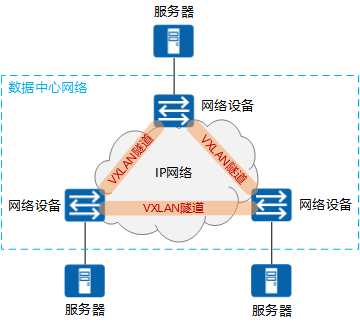
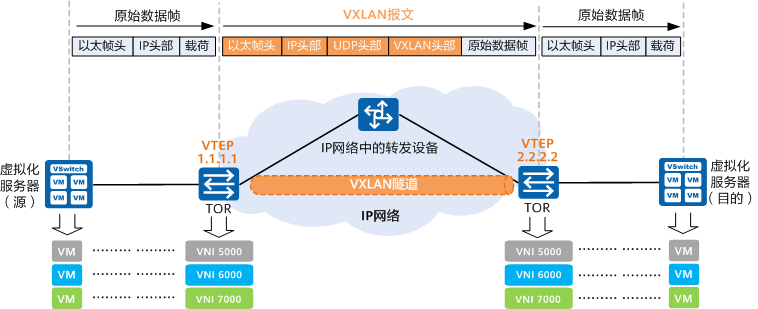
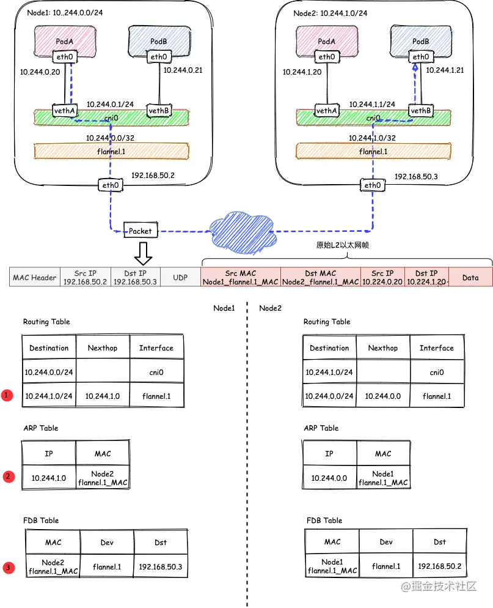
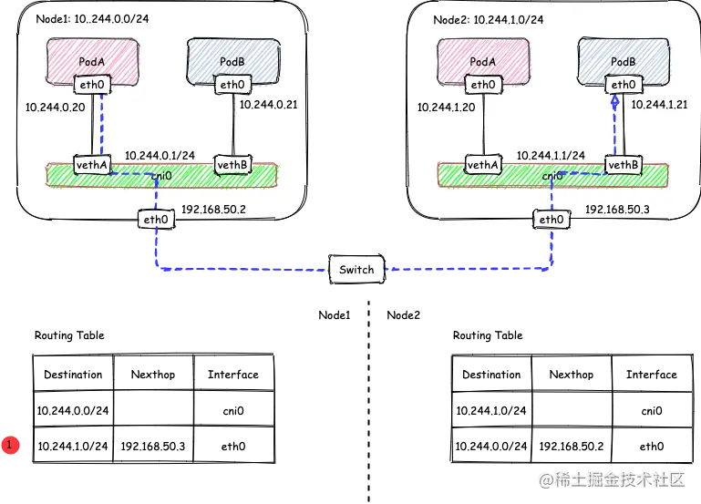

Flannel是为Kubernetes设计的一种简单易用的容器网络解决方案，将所有的Pod都组织在同一个子网的虚拟大二层网络中。Flannel支持的后端转发方式有许多种，本文将介绍其中两种，VXLAN以及host-gw。
什么是vxlan
VXLAN（Virtual eXtensible Local Area Network，虚拟扩展局域网），是由IETF定义的NVO3（Network Virtualization over Layer 3）标准技术之一，是对传统VLAN协议的一种扩展。VXLAN的特点是将L2的以太帧封装到UDP报文（即L2 over L4）中，并在L3网络中传输
VXLAN本质上是一种隧道技术，在源网络设备与目的网络设备之间的IP网络上，建立一条逻辑隧道，将用户侧报文经过特定的封装后通过这条隧道转发。从用户的角度来看，接入网络的服务器就像是连接到了一个虚拟的二层交换机的不同端口上（可把蓝色虚框表示的数据中心VXLAN网络看成一个二层虚拟交换机），可以方便地通信

VXLAN的网络模型

更多详细的介绍说明参考文档https://support.huawei.com/enterprise/zh/doc/EDOC1100087027/f10c6c1d?idPath=24030814|21782165|21782239|252837181
vxlan模式
VXLAN是Flannel默认和推荐的模式。当我们使用默认配置安装Flannel时，它会为每个节点分配一个24位子网，并在每个节点上创建两张虚机网卡： cni0 和 flannel.1 。 cni0 是一个网桥设备，类似于 docker0 ，节点上所有的Pod都通过veth pair的形式与 cni0 相连。 flannel.1 则是一个VXLAN类型的设备，充当VTEP的角色，实现对VXLAN报文的封包解包。
如果容器都是在同一个节点进行通讯，是不需要经过flannel.1这个网卡，直接通过cni0进行互通即可

如果是跨节点通讯，假设有两个节点Node1和Node2，其中Node1的PodA要跟Node2的PodB通信

发送端：在PodA中发起 ping 10.244.1.21 ，ICMP 报文经过 cni0 网桥后交由 flannel.1 设备处理。 flannel.1 设备是一个VXLAN类型的设备，负责VXLAN封包解包。 因此，在发送端，flannel.1 将原始L2报文封装成VXLAN UDP报文，然后从 eth0 发送。
接收端：Node2收到UDP报文，发现是一个VXLAN类型报文，交由 flannel.1 进行解包。根据解包后得到的原始报文中的目的IP，将原始报文经由 cni0 网桥发送给PodB。
那么到底哪些ip会交给flannel.1处理呢？
flanneld 从 etcd 中可以获取所有节点的子网情况，以此为依据为各节点配置路由，将属于非本节点的子网IP都路由到 flannel.1 处理，本节点的子网路由到 cni0 网桥处理，如果节点信息有变化， flanneld 也会同步的对路由信息做修改。
1 | [root@Node1 ~]# ip r |
flannel.1 的封包过程
VXLAN的封包是将二层以太网帧封装到四层UDP报文中的过程。
原始L2帧
要生成原始的L2帧， flannel.1 需要得知：
内层源/目的IP地址
内层源/目的MAC地址
内层的源/目的IP地址是已知的，即为PodA/PodB的PodIP，在图例中，分别为10.224.0.20和10.224.1.20。 内层源/目的MAC地址要结合路由表和ARP表来获取。根据路由表①得知：
下一跳地址是10.224.1.0，关联ARP表②，得到下一跳的MAC地址，也就是目的MAC地址：Node2_flannel.1_MAC；
报文要从 flannel.1 虚拟网卡发出，因此源MAC地址为 flannel.1 的MAC地址。
要注意的是，这里ARP表的表项②并不是通过ARP学习得到的，而是 flanneld 预先为每个节点设置好的，由 flanneld负责维护，没有过期时间。
1 | # 查看ARP表 |
有了上面的信息， flannel.1 就可以构造出内层的2层以太网帧：
外层VXLAN UDP报文
要将原始L2帧封装成VXLAN UDP报文， flannel.1 还需要填充源/目的IP地址。前面提到，VTEP是VXLAN隧道的起点或终点。因此，目的IP地址即为对端VTEP的IP地址，通过FDB表获取。在FDB表③中，dst字段表示的即为VXLAN隧道目的端点（对端VTEP）的IP地址，也就是VXLAN DUP报文的目的IP地址。FDB表也是由 flanneld 在每个节点上预设并负责维护的。
FDB表（Forwarding database）用于保存二层设备中MAC地址和端口的关联关系，就像交换机中的MAC地址表一样。在二层设备转发二层以太网帧时，根据FDB表项来找到对应的端口。例如cni0网桥上连接了很多veth pair网卡，当网桥要将以太网帧转发给Pod时，FDB表根据Pod网卡的MAC地址查询FDB表，就能找到其对应的veth网卡，从而实现联通。
可以使用 bridge fdb show 查看FDB表：
1 | [root@Node1 ~]# bridge fdb show | grep flannel.1 |
源IP地址信息来自于 flannel.1 网卡设置本身，根据 local 192.168.50.2 可以得知源IP地址为192.168.50.2。
1 | [root@Node1 ~]# ip -d a show flannel.1 |
至此， flannel.1 已经得到了所有完成VXLAN封包所需的信息，最终通过 eth0 发送一个VXLAN UDP报文： image.png Flannel的VXLAN模式通过静态配置路由表，ARP表和FDB表的信息，结合VXLAN虚拟网卡 flannel.1 ，实现了一个所有Pod同属一个大二层网络的VXLAN网络模型。
host-gw模式
在上述的VXLAN的示例中，Node1和Node2其实是同一宿主机中的两台使用桥接模式的虚机，也就是说它们在一个二层网络中。在二层网络互通的情况下，直接配置节点的三层路由即可互通，不需要使用VXLAN隧道。要使用host-gw模式，需要修改 ConfigMap kube-flannel-cfg ，将 Backend.Type 从vxlan改为host-gw，然后重启所有kube-flannel Pod即可：
1 | net-conf.json: | |

在host-gw模式下，由于不涉及VXLAN的封包解包，不再需要flannel.1虚机网卡。 flanneld 负责为各节点设置路由 ，将对应节点Pod子网的下一跳地址指向对应的节点的IP，如图中路由表①所示。
1 | [root@Node1 ~]# ip r |
由于没有封包解包带来的消耗，host-gw是性能最好的。不过一般在云环境下，都不支持使用host-gw的模式，在私有化部署的场景下，可以考虑。
参考文档
https://www.cnblogs.com/cheyunhua/p/15241291.html

欢迎访问 Vashon 的博客，博客和文章在完善中，请大家耐心等待。 若有问题或者有好的建议欢迎留言，笔者看到之后会及时回复。

...
...